实践背景
大数据简介
大数据（Big Data），指无法在一定时间范围内用常规软件工具进行捕捉、管理和处理的数据集合，是需要新处理模式才能具有更强的决策力、洞察发现力和流程优化能力的海量、高增长率和多样化的信息资产。一种规模大到在获取、存储、管理、分析方面大大超出了传统数据库工具能力范围的数据集合，具有海量数据规模、快速数据流转、多样数据类型和价值密度低四大特征。
Hadoop简介
Hadoop是一套开源的用于大规模数据集的分布式存储和处理的工具平台。它最早由Yahoo的技术 团队根据Google所发布的公开论文思想用JAVA语言开发。以分布式文件系统HDFS（Hadoop distributed file system）和Map Reduce分布式计算框架为核心，具有高容错性、高伸缩性等优点，允许用户将Hadoop部署在廉价的硬件上，构建分布式文件存储系统。
实践目的
- 对大数据与Hadoop架构有一个最基本的了解。
- 掌握利用虚拟机搭建简易Hadoop伪分布式集群的方法。
实践过程
本次实践使用的环境、平台与工具：
- Windows10
- VMware Workstation 16
- XShell6
- WinSCP（Win10下的SSH开源图形化SFTP客户端）
集群规划
| 主机名 | 功能 |
|---|---|
| node1 | NameNode |
| node2 | datanode, ResourceManager |
| node3 | datanode,subNameNode,mapreduce.jobHistory |
虚拟机环境配置
- 安装虚拟机环境 VMware Workstation 16。
- 下载Ubuntu18.04.5-Server的iso镜像文件。
- 打开VMware，使用上面的镜像文件创建一个Ubuntu-Server虚拟机系统，并复制三份出来作为实践的对象，原件就作为虚拟机在原始状态下的一个备份。
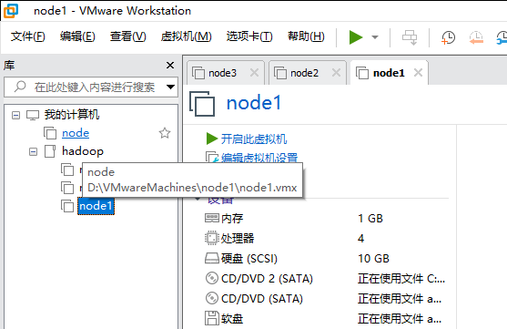
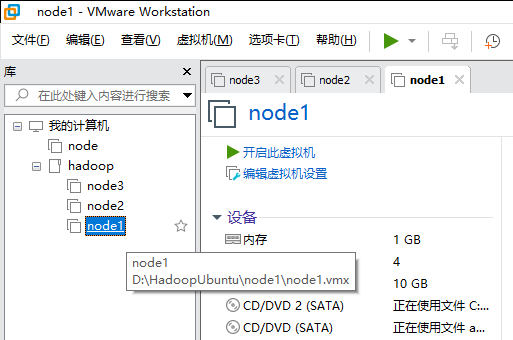
- 将VMware的外部连接模式由默认的自动桥接模式更改为NAT模式，并记录NAT设置中默认分配的网关，由图可知为
192.168.235.2。
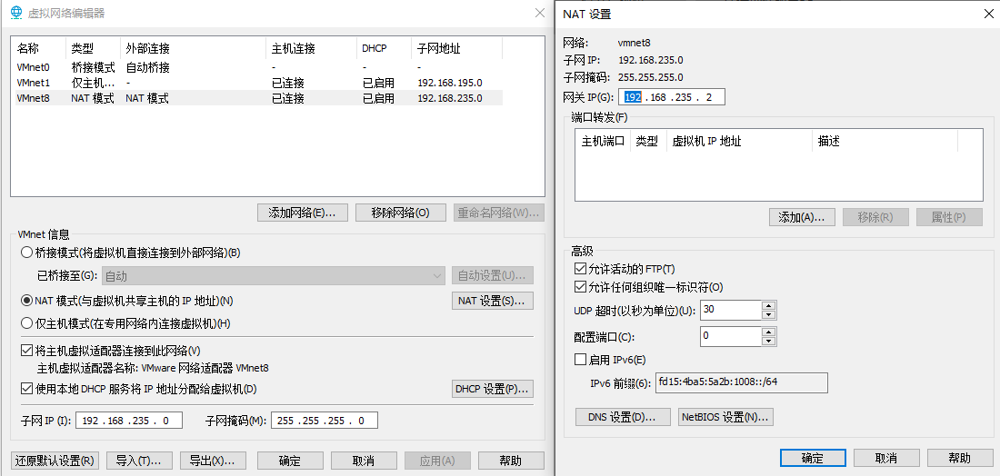
- 设置本地网络适配器，将VMnet8的IPV4协议中的网关与VMware中的网关手动匹配，IP地址可任意选择，只要不与之后虚拟机静态分配的ip重了就行。子网掩码默认为
255.255.255.0，DNS服务器选择Google的8.8.8.8。另外，由于虚拟机是复制的，还需要进入每台虚拟机的设置界面中，手动生成一个MAC物理地址，避免地址冲突造成无法联网。
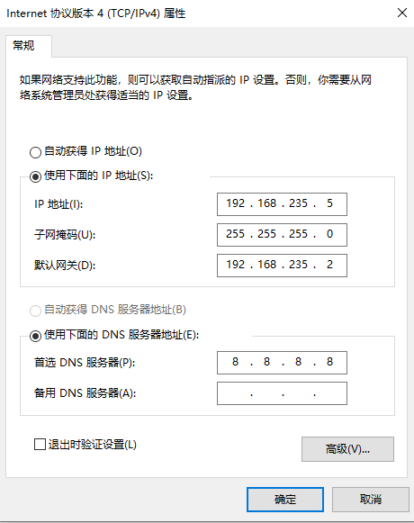
- 分别启动三台虚拟机，设置用户名与密码，并使用
sudo passwd root命令修改root密码 - 修改
/etc/netplan中的配置文件01-network-manager-all.yaml，将自动分配ip地址选项dhcp设置为false，并在下方添加三个选项addresses选项，值为[ip/24]，表示本子主机的静态ip地址，24表示网段有效位。gateway4选项，值为192.168.235.2，表示VMnet8虚拟机网关。nameservers选项，子选项为addresses，值为[8.8.8.8]，表示DNS服务器。
- 修改
/etc/hostname中的主机名，并修改/etc/hosts，将三台虚拟机的主机名与ip地址写进配置里。可使用ifconfig命令查看所在虚拟机的以太网ip地址。配置完成后，使用ping www.baidu.com验证虚拟机是否可联网。
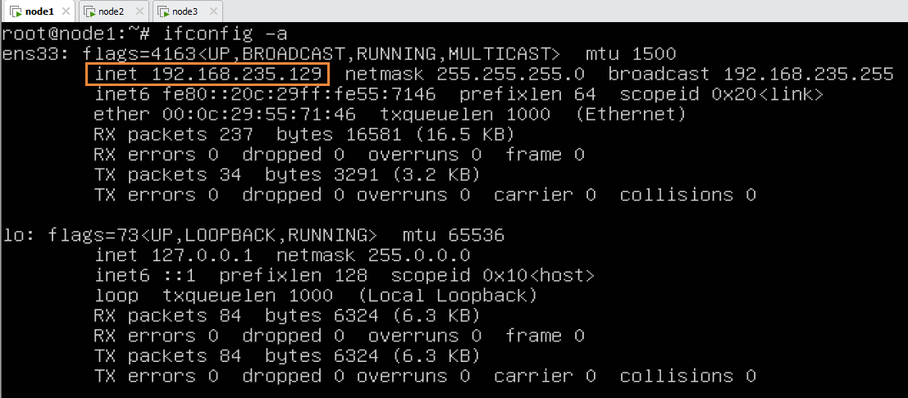 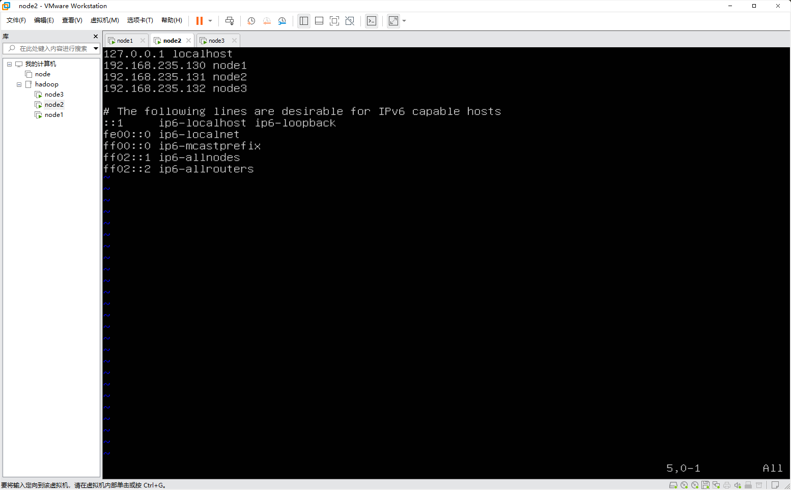
- 为三台虚拟机分别安装ssh：
sudo apt install openssh-server，启动ssh并设置为开机自启动systemctl enable ssh，systemctl start ssh - 在虚拟机
node1上使用ssh-keygen -t rsa命令生成ssh密钥- 使用
ssh-copy-id node1命令发送密钥到本机 - 编写Shell分发脚本，将
.ssh文件分发到另外两台虚拟机中，脚本dispense内容如下，使用方式为dispense dir或dispense file
- 使用
- 如下图所示，表示分发成功
1 | !/bin/bash |
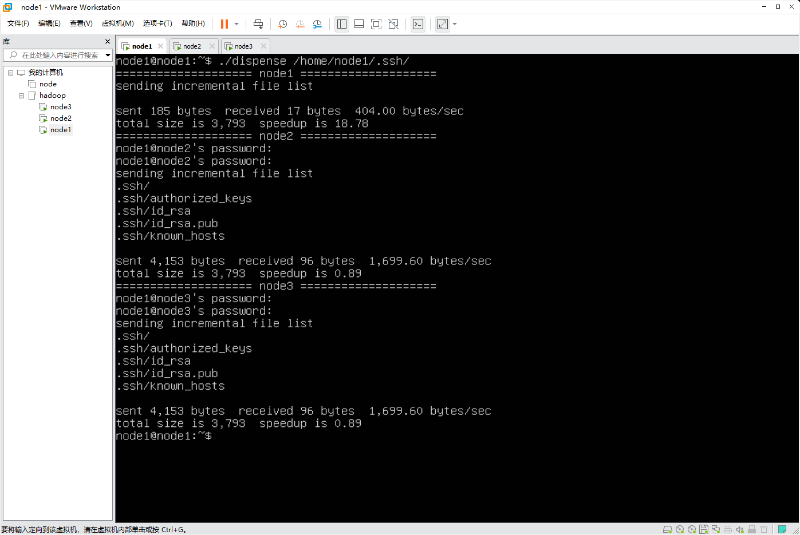
安装JDK与Hadoop
- 在XShell中使用ssh分别登录三台虚拟机
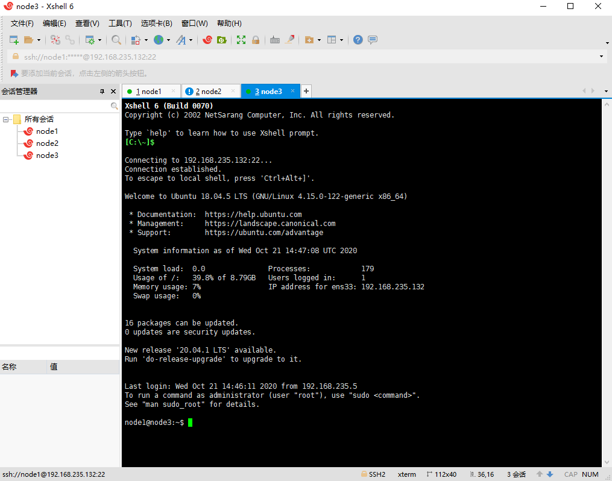
- 下载JDK的
.deb安装包以及Hadoop的压缩包，通过WinSCP传输到虚拟机node1的内部，并使用dispense分发脚本将它们分别分发到另外两个虚拟机node2和node3内。
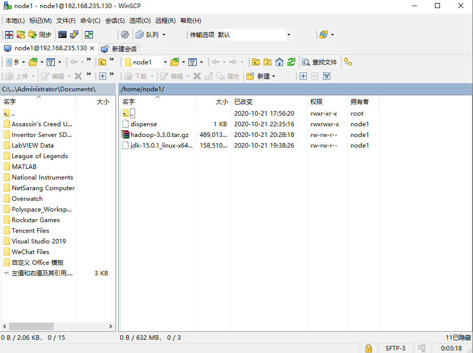 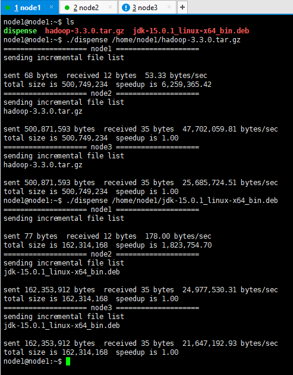
在XShell中打开查看-撰写-撰写栏，设置为“所有会话”，这样就可以在撰写栏中同时操作三台虚拟机。以下命令均在XShell撰写栏中完成。
使用
sudo dpkg -i jdk-15.0.1_linux-x64_bin.deb命令安装JDK。在
/usr/local路径下创建hadoop文件夹，并使用sudo mv pathA pathB命令将hadoop压缩包移动至该路径下，并解压。编辑
/etc/profile文件，在文件末尾添加JAVA与Hadoop的环境变量，如下所示
1 | export JAVA_HOME=/usr/lib/jvm/jdk-15.0.1 |
- 执行
source /etc/profile加载配置 - 执行
java -version与hadoop version命令查看二者安装是否成功
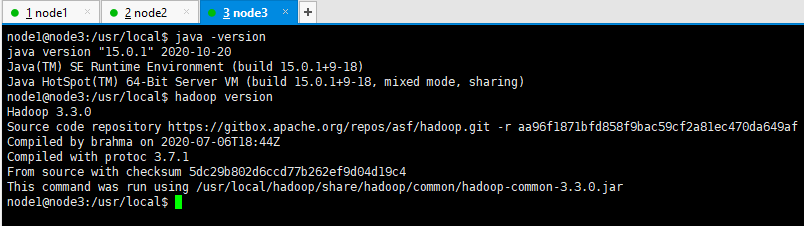
安装Hadoop集群
在
node1中切换至/usr/local/hadoop/etc/hadoop路径下，并按如下方式配置hadoop编辑
Core-site.xml文件
1 | <!-- 指定HDFS中NameNode的地址 --> |
- 编辑
hdfs-site.xml
1 | <property> |
- 编辑
yarn-site.xml
1 | <!-- Site specific YARN configuration properties --> |
- 编辑
mapred-site.xml
1 | <property> |
- 配置
worker
1 | node1 |
- 在
node1中使用dispense分发脚本将/usr/local/hadoop/etc整个目录分发给node2和node3
测试Hadoop
- 在
node1中执行命令格式化namenode
1 | hdfs namenode -format |
- 在
node1中启动hadoop分布式文件系统hdfs
1 | start-dfs.sh |
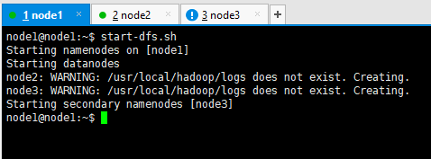
- 在配置了Resourcemanager的子主机
node2中启动yarn
1 | start-yarn.sh |
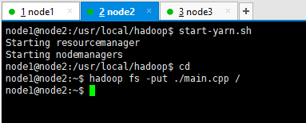
- 在任意一台虚拟机中，创建一个文件或者目录，并使用hadoop命令将文件或目录拷贝至hdfs中。
1 | vim main.cpp |
- 在另一台虚拟机中，从hdfs内拷贝文件到本地
1 | hadoop fs -get /main.cpp |
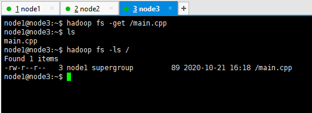
- 打开浏览器，通过ip地址访问hadoop集群
- hdfs集群：192.168.235.130:9870
- NameNode：负责管理文件系统名称空间和控制外部客户机访问的主机；
- 本例中NameNode是
node1，Hadoop3版本默认端口为9870；
- yarn集群：192.168.235.131:8088
- ResourceManager：yarn集群的主控节点，负责协调和管理整个集群（NodeManager）的资源；
- 本例中RecourceManager是
node2，Hadoop3默认端口为8088；
- hdfs集群：192.168.235.130:9870
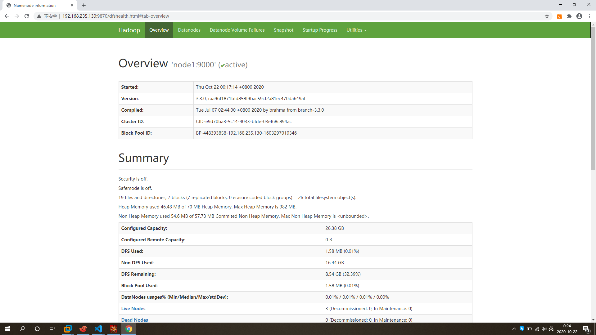 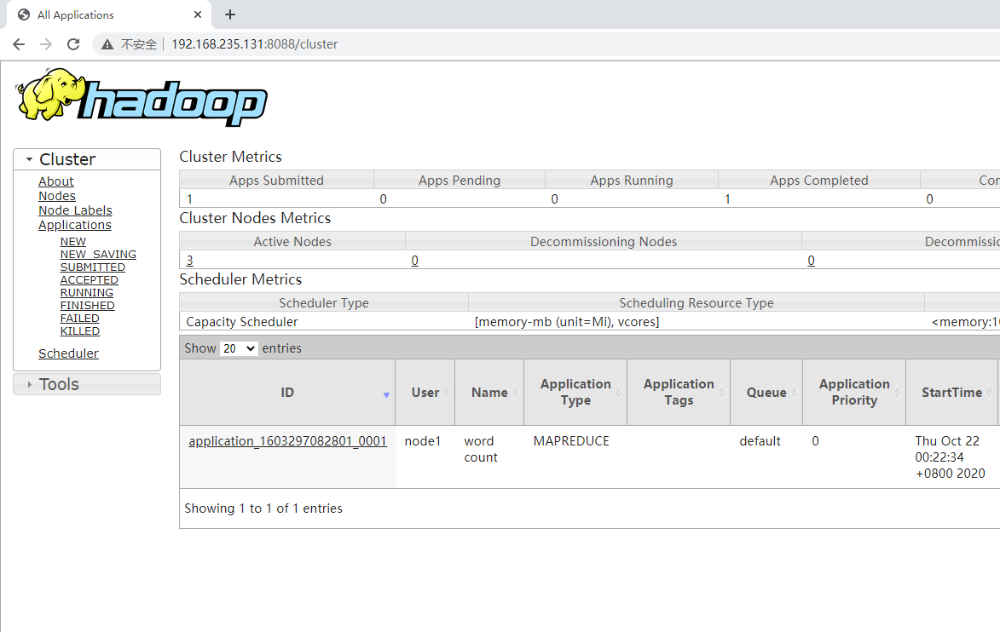
实践过程中遇到的问题以及解决办法
问题1：两台或三台虚拟机的ip地址相同，且均无法联网
- 原因分析：
- 在配置文件中关闭了自动分配ip地址的选项
dhcp，但分配静态ip时填写的格式或内容不正确，例如未填写nameservers一项中的DNS服务器。 - 复制完虚拟机之后忘记修改副本的MAC地址。
- 在配置文件中关闭了自动分配ip地址的选项
- 解决方案：完整且正确填写
/etc/netplan路径下的配置文件，确保ip互异且有效；复制虚拟机后优先配置MAC；
- 原因分析：
问题2：分发ssh密钥时出现
permission denied的错误信息，以及使用dispense脚本分发.ssh目录时失败- 原因分析：
- Ubuntu默认不支持使用root用于ssh连接系统，经常会抛出请求被拒绝的错误；
- 所操作的文件属于系统文件，使用非root权限的用户ssh连接系统会导致无法编辑的错误；
- 解决方案：修改
/etc/ssh/sshd_config文件，替换如下几行，就可以使用root登录了；或者使用sudo chown user dir命令将文件的完全权限交付给用户user，达到使用非root账户编辑系统文件的目的。
1
2
3
4
5# Authentication:
LoginGraceTime 120
#PermitRootLogin without-password
PermitRootLogin yes
StrictModes yes- 原因分析：
番外
在服务器端直接编辑文件较麻烦，可以通过主机端ssh连接服务器端，使用主机端的GUI编辑器修改虚拟机内的文件，也可以直接用VScode的Remote-SSH插件一键连接
- 安装VSCode插件
remote-ssh - 按下
F1，输入ssh，在可选项中选择open configuration file..，编辑配置文件，可以是全局文件/etc/ssh/ssh_config，也可以是用户文件/home/user/.ssh/config
1 | Host 任意填写 |
- 通过
F1选择Connect Current Window to Host..选择刚刚修改配置文件，输入密码即可登录，若过程中有报错，请查看笔记中关于ssh登录失败的描述
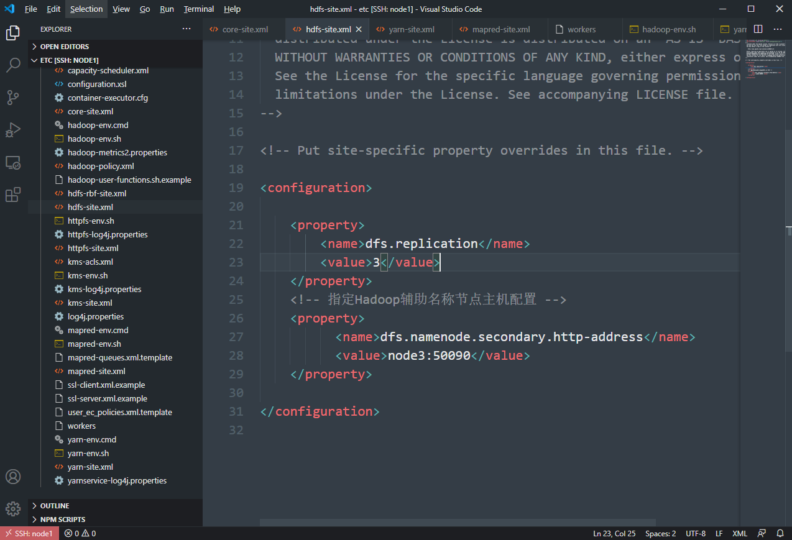